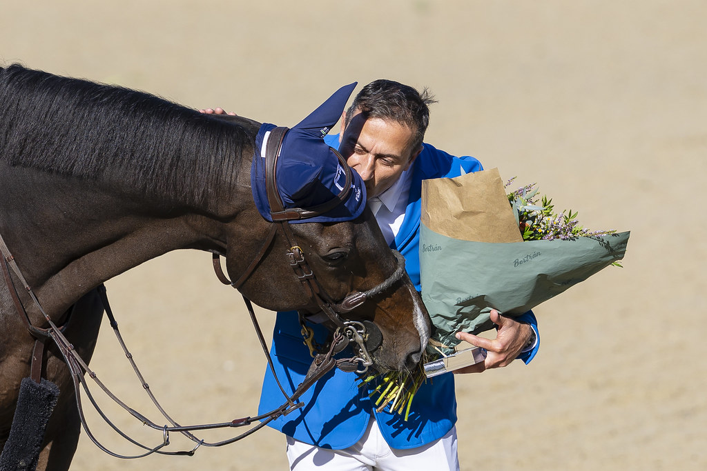

Piergiorgio Bucci conquista el Rolex Grand Prix de La Baule con Hantano
El jinete italiano logró su segundo triunfo consecutivo en el circuito Rolex Series, tras su victoria en Roma hace dos semanas. Martin Fuchs y Julien Épaillard completaron el podio en una prueba de máximo nivel.

Uso editorial
Piergiorgio Bucci (número 22 del ranking mundial) firmó el domingo una actuación memorable al proclamarse vencedor del Rolex Grand Prix de la Ciudad de La Baule, prueba estrella del Jumping International de La Baule. El jinete italiano de 50 años sumó así su segundo triunfo consecutivo en el prestigioso circuito Rolex Series, apenas dos semanas después de imponerse en Roma con Pallieter VD N.Ranch.
En esta ocasión, Bucci montó a Hantano, un caballo castrado KWPN de 14 años con el que espera competir en el Campeonato del Mundo de Aquisgrán dentro de dos meses. El binomio se convirtió en el segundo italiano en inscribir su nombre en el palmarés de La Baule, 41 años después de que Giorgio Nuti lo lograra en 1985 con Impedoumi.
El recorrido diseñado por Grégory Bodo deparó una desempate de siete binomios bajo un sol radiante en el Stade François André. Bucci, último en entrar a pista, superó el crono del suizo Martin Fuchs (Conner Jei), único jinete que había logrado un doble cero hasta ese momento. "Pensé que el tiempo de Martin sería muy difícil de batir", reconoció el italiano. "Pero nunca entro en un desempate esperando perder. Quería ganar y creía que podía hacerlo, especialmente porque el diseño del recorrido me favorecía, con dos giros muy cerrados a la izquierda".
Martin Fuchs (número 27 mundial) sumó su segunda plaza de subcampeón del fin de semana, tras quedar segundo el sábado en el Derby Demeures de Campagne. "Durante diez minutos estuve muy frustrado", confesó el suizo. "Pero rápidamente pasé a sentirme satisfecho con el segundo puesto en uno de mis concursos favoritos del año. Por supuesto, me habría encantado ganar, pero Piergiorgio cabalgó de forma brillante".
El francés Julien Épaillard (número 11 mundial), medallista de bronce por equipos en los Juegos Olímpicos de París 2024 y reciente ganador de la Final de la Copa del Mundo 2025, completó el podio con Fringan de Vesquerie. A pesar de cometer un fallo en el desempate, registró el tiempo más rápido. "Vine aquí para evaluar dónde estábamos mi caballo y yo, y el resultado es obviamente muy positivo", señaló Épaillard, quien el viernes había contribuido al triunfo francés en la Copa de Naciones Barrière junto a Nina Mallevaey, Antoine Ermann y Olivier Perreau.
En el CSI 1*, la amazona Jeanne Rossez sorprendió al adjudicarse el Range Rover Grand Prix (1,35 m) con N Dayclic de la Bérangerie. "Había venido principalmente esperando ganar el Derby del sábado, donde acabé sexta, así que no esperaba ganar el Grand Prix, es una sorpresa maravillosa", celebró Rossez, más habituada a competiciones de completo. El irlandés Gavin Harley (Liverpool SFN) fue segundo y Bastien Bauer (Imperial de Semilly) tercero.
Consultar resultados oficiales completos
Más información sobre el Jumping de La Baule
— Redacción de Hípica al Día